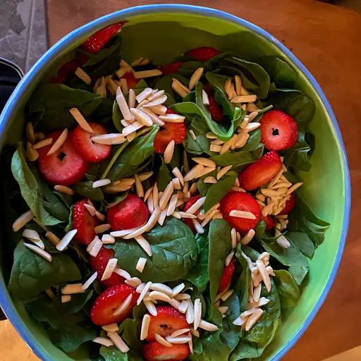

Strawberry Spinach Salad

Return to home page
Ingredients
- 1/2 cup white sugar
- 1/2 cup olive oil
- 1/2 cup distilled white vinegar
- 2 tablespoons sesame seeds
- 1 tablespoon poppy seeds
- 1 tablespoon minced onion
- 1/4 teaspoon paprika
- 1/4 teaspoon Worcestershire sauce
Salad Ingredients:
- 1 qt. strawberries - cleaned, hulled and sliced
- 10 oz fresh spinach - rinsed, dried and torn into bite-sized pieces
- 1/4 cup almonds, blanched and slivered
Steps
- Making the dressing: whisk together sugar, oil, vinegar, sesame seeds, poppy seeds, onions, paprika, and Worcestershire in a medium bowl.
Cover and chill for 1 hour.
- Make salad: combine strawberries, spinach, and almonds in a large bowl.
- Pour dressing over salad; toss to coat. Refrigerate for 10-15 minutes before serving.